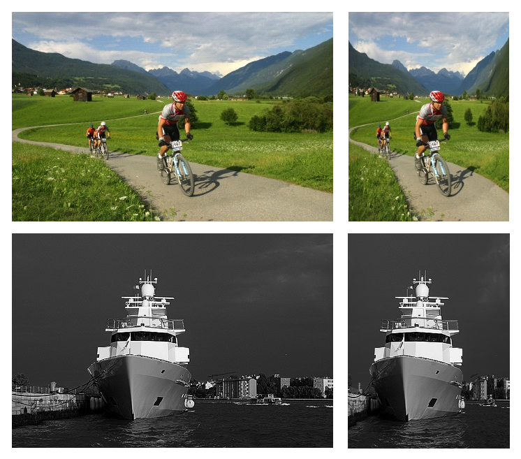
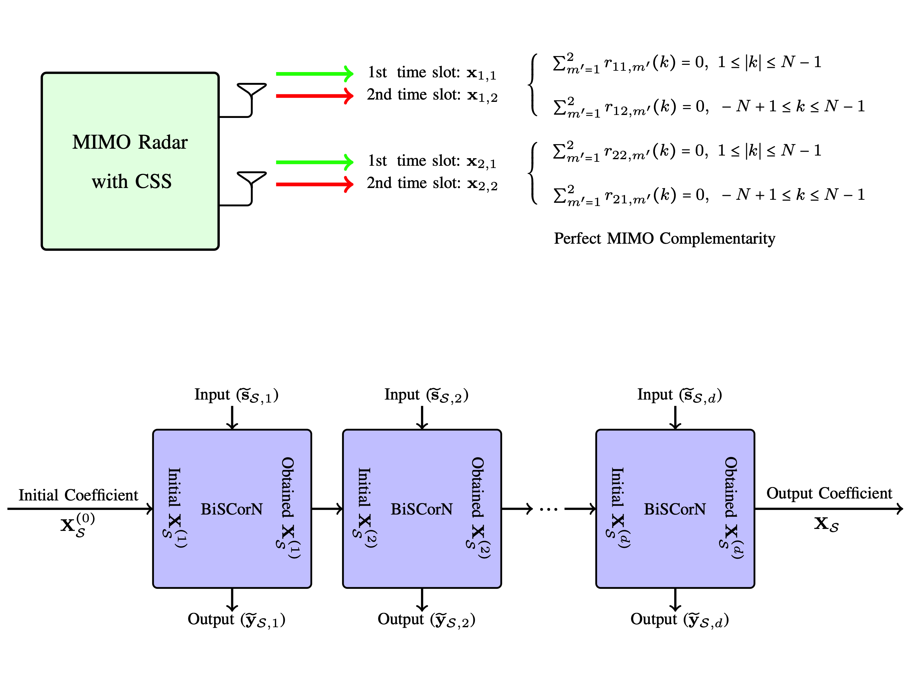
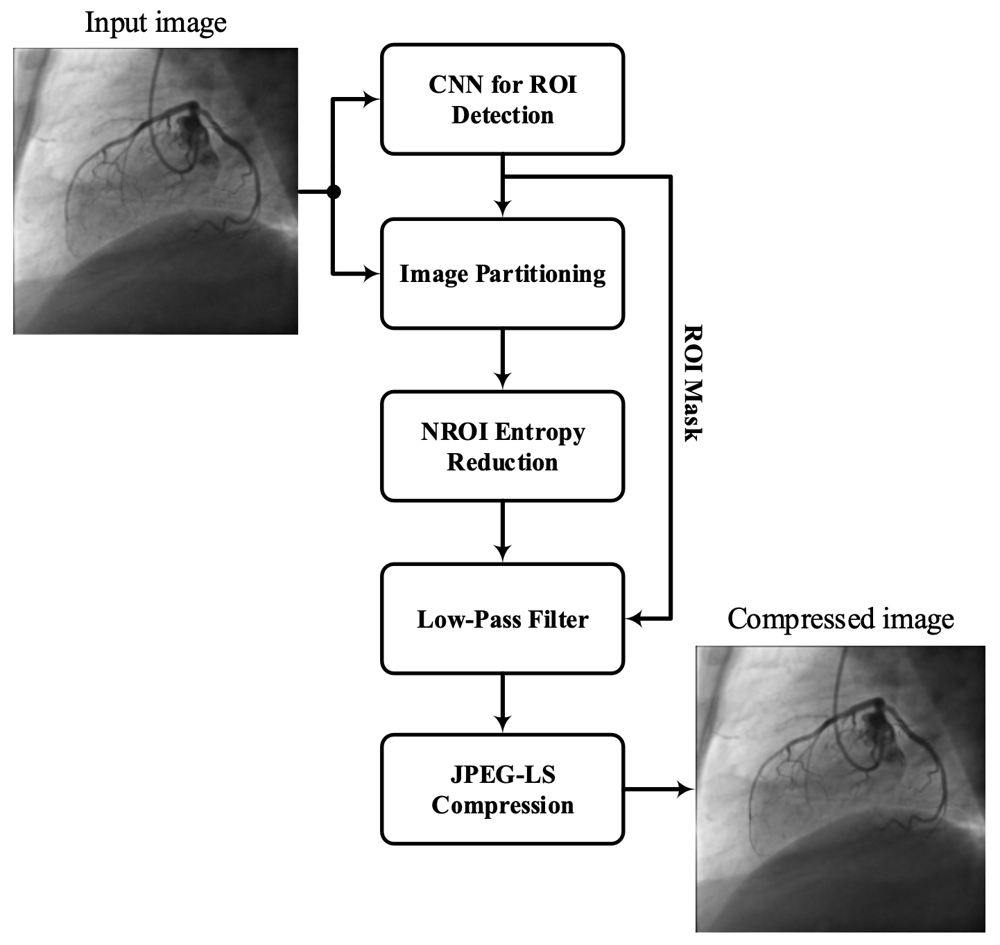
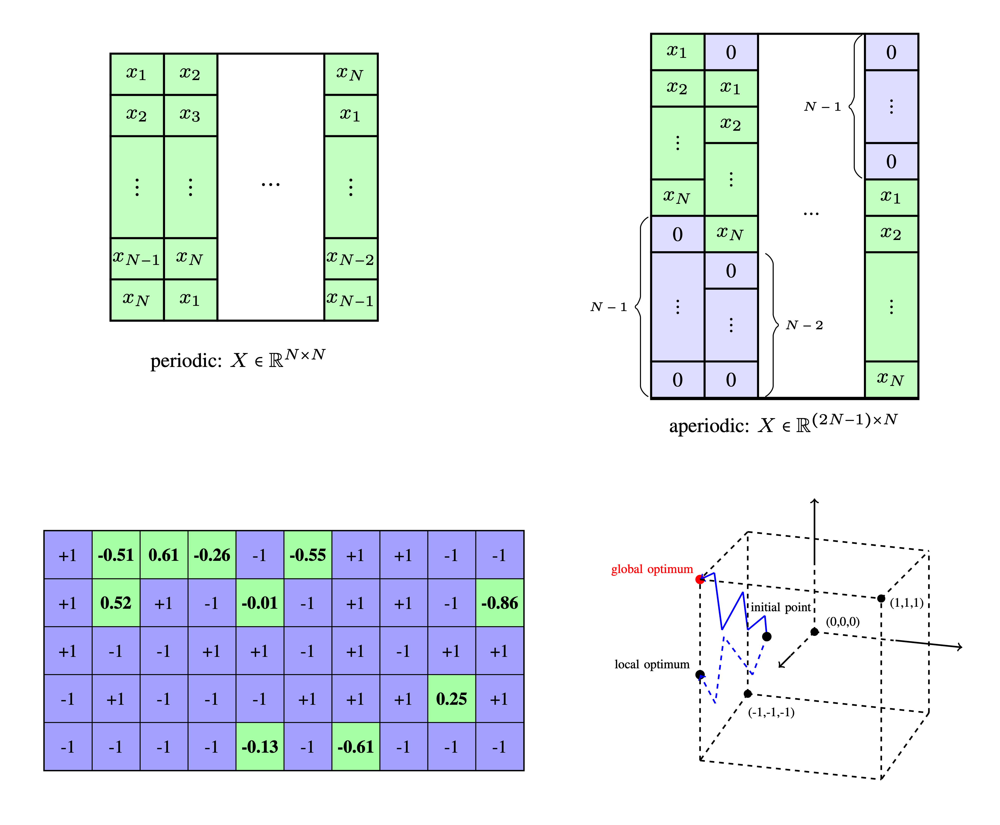
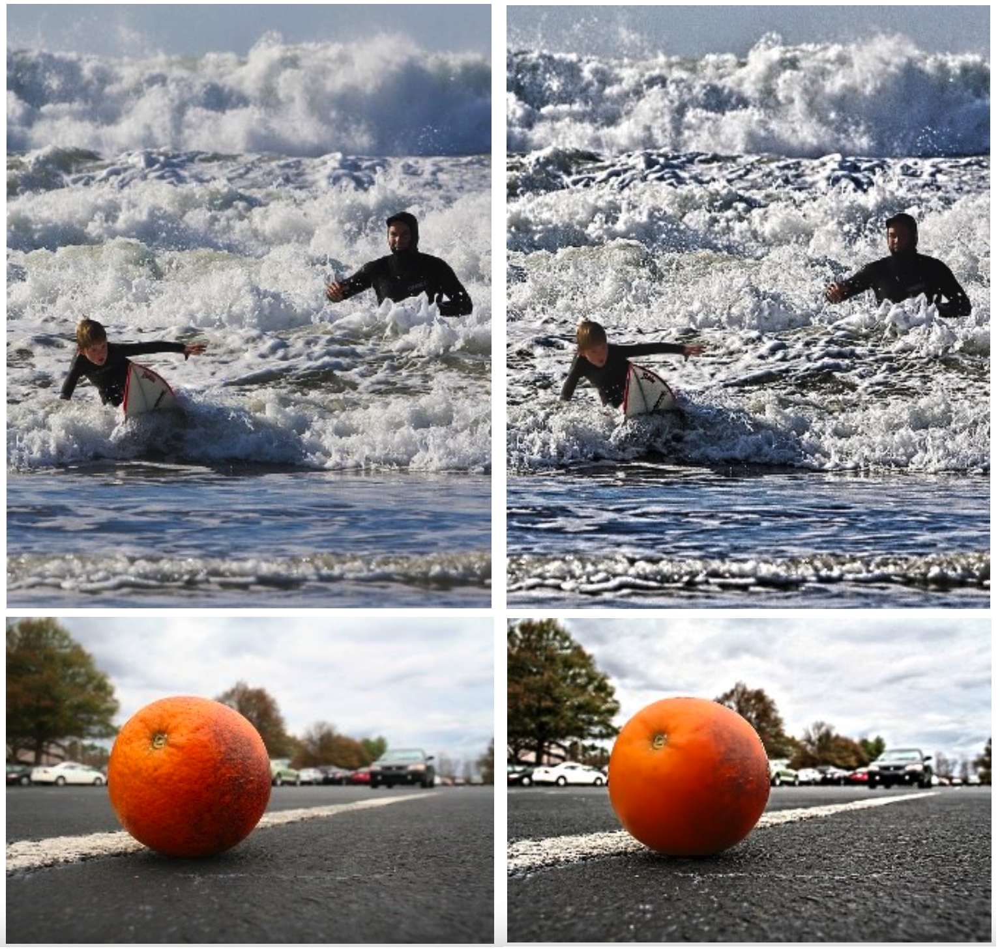
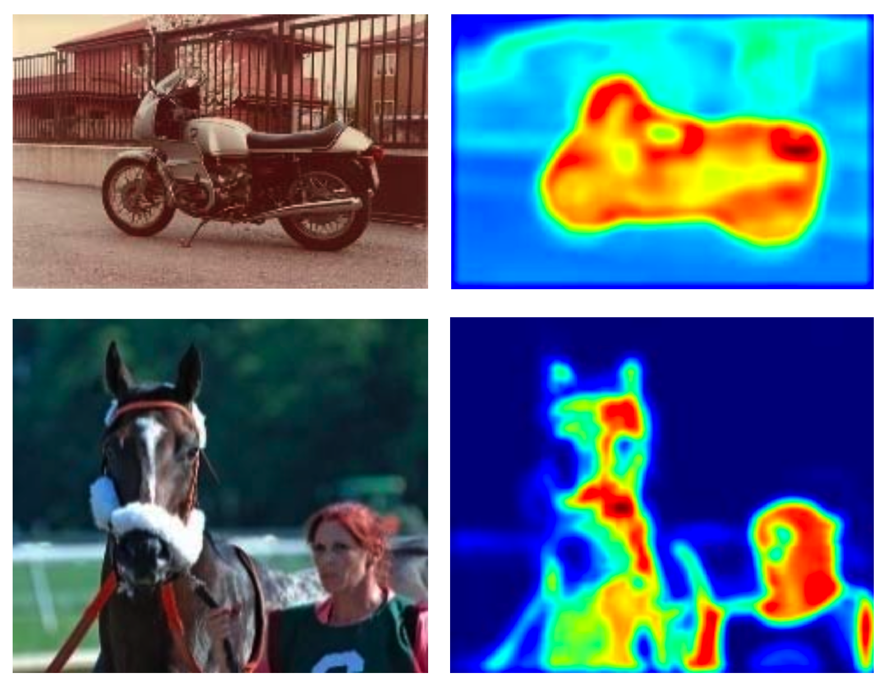
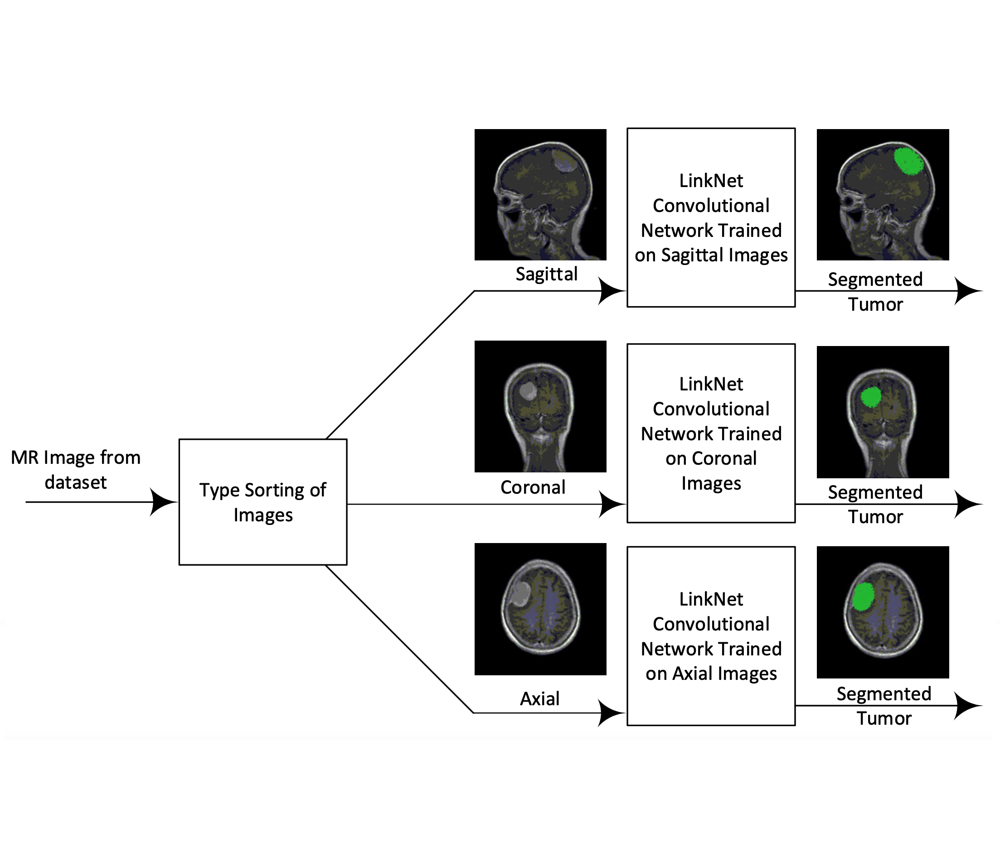

Mahdi Ahmadi
Ahmadi[at]asu[dot]edu
699 S Mill Ave, Tempe, Arizona
 /
/
 /
/

I am a Research Associate and a PhD student in Computer Sciences at School of Computing and Augmented Intelligence (SCAI) Arizona State University.
I did my Masters and Batchelors both in Electrical Engineering at Isfahan University of Technology.
 ReDMark: Framework for residual diffusion watermarking based on deep networks
ReDMark: Framework for residual diffusion watermarking based on deep networks
M. Ahmadi,
A. Norouzi,
N. Karimi,
S. Samavi
A. Emami
Expert Systems with Applications (2020).
code /
bibtex

Context-aware saliency detection for image retargeting using convolutional neural networks
M. Ahmadi,
N. Karimi,
S. Samavi
Multimedia Tools and Applications (2021)
bibtex

A Learning-Inspired Strategy to Design Binary Sequences With Good Correlation Properties: SISO and MIMO Radar Systems
O. Rezaei,
M. Ahmadi,
MM. Naghsh,
A. Aubry,
MM. Nayebi,
A. De Maio
IEEE Transactions on Aerospace and Electronic Systems (2023)
bibtex

Lossless Compression of Angiogram Foreground with Visual Quality Preservation of Background
M. Ahmadi,
A. Emami,
M Hajabdollahi,
SMR. Soroushmehr,
N. Karimi,
S. Samavi,
K. Najarian
International Conference of the IEEE Engineering in Medicine and Biology Society (EMBC 2018)
bibtex

A Learning Approach to Design Binary Sequences with Good Correlation Properties
O. Rezaei,
M. Ahmadi,
MM. Naghsh
IEEE Radar Conference (2020)
bibtex

Artistic Instance-Aware Image Filtering by Convolutional Neural Networks
M. Tehrani,
M Bagheri,
M. Ahmadi,
A. Noroozi,
N. Karimi,
S. Samavi
International Symposium on Telecommunications (IST 2018)
bibtex

Context-Aware Saliency Map Generation Using Semantic Segmentation
M. Ahmadi,
M Hajabdollahi,
N. Karimi,
S. Samavi
Iranian Conference on Electrical Engineering (ICEE 2018)
bibtex

Brain Tumor Segmentation Using Deep Learning by Type Specific Sorting of Images
Z. Sobhaninia,
S. Rezaei,
A. Noroozi,
M. Ahmadi,
H. Zarrabi,
N. Karimi,
A. Emami,
S. Samavi
arXiv Preprint
bibtex
 Image Seam-Carving by Controlling Positional Distribution of Seams
Image Seam-Carving by Controlling Positional Distribution of Seams
M. Ahmadi,
N. Karimi,
S. Samavi
International Conference on Machine Vision and Image Processing (MVIP 2020)
bibtex